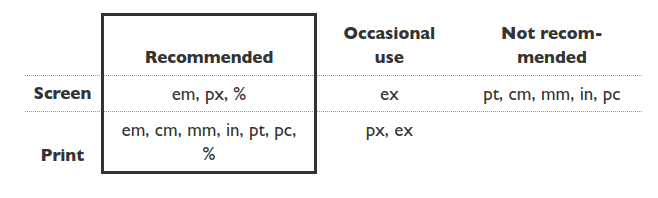

Absolute measurements (cm, mm, in, etc.) are not recommended for screens.
There is another reason to avoid absolute units for other uses than print: You look at different screens from different distances. 1cm on a desktop screen looks small. But the same on a mobile phone directly in front of your eyes looks big. It's better to use relative units, such as em, instead.World Wide Web Consortium, CSS Tips and Tricks